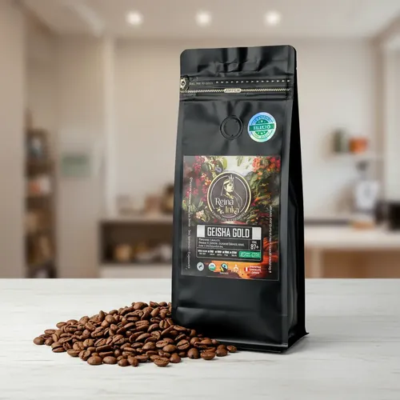

Nuestra Selección de Orígenes

-
Geisha San Fernando - Cuzco
- Proceso:Lavado con fermentación controlada de 24 horas.
- Notas de cata: Jazmín, flor de azahar, miel de abeja y durazno.
- Puntuación SCA: 88.5 puntos
- Precio sugerido: S/52.00 (bolsa de 250g)
Cultivado a 1,850 msnm en el valle de La Convención. Es una de las variedades más codiciadas del mundo por su complejidad aromática.